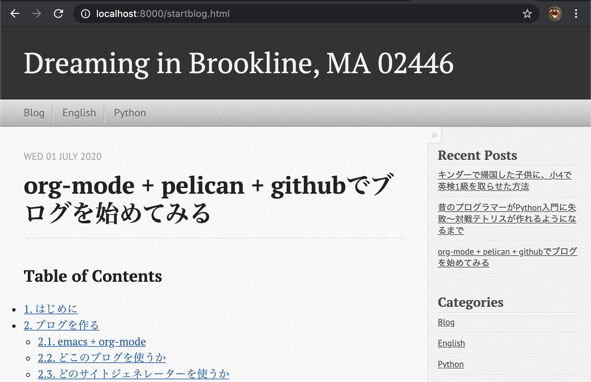
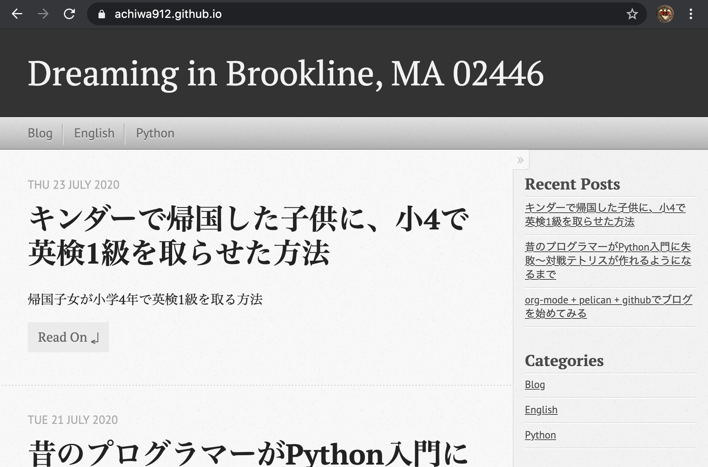

Table of Contents
1 はじめに
こんにちは、初めまして。きょうす です。 最近20年振りにPythonでプログラミングすることを覚えて、作ったゲームを githubに公開したのですが、調子に乗ってブログまで始めてみる気になりました。 折角なので、メモ代わりに使っているemacs + org-modeでできないか調べてみたら、 Pelicanというジェネレーターを使えばできそうなことがわかったので、挑戦して みることにしました。
初回からいきなりマニアックな話題ですが、このブログでは技術的なことだけ でなく、英語学習や英語教育についても取り上げていきたいと思います。
2 ブログを作る
2.1 emacs + org-mode
emacsというエディタをご存じでしょうか? かつて、vimと人気を2分するくらい ポピュラーなエディタだったのですが、とにかくマニアックで、とてつもなく 急なラーニングカーブを誇っているためか、最近ではすっかり人気も陰り、 少なくとも私の周囲で使っている人は見当たりません。
私は今の会社に入社したときに、viとemacsの選択を迫られ、emacsの方が名前が クールという理由で使い始めました。その後20余年、emacsが廃れずに生き残って いるのは驚きです。私は指がemacsのキー操作に慣れてしまったため、もはや 他のエディタに行く気にはなりません。もちろん、他の人にはemacsは勧めません。
emacsは勧めませんが、emacsのキーバインドを覚えてもよいという奇特な方が いらっしゃいましたら、是非ともorg-modeを使っていただきたいです。 というか、当然バリバリと使われているものと思います。もしご存じないなら org-modeについては、るびきちさんのサイトを見ていただくのがよいでしょう。 emacsへの愛に溢れたページです。
2.2 どこのブログを使うか
ネットでいろいろと検索してみましたが、最初はgoogleのBloggerを使う気で いました。無料の割に広告が出ず、自由度も高くてよさそうです。Bloggerに ついていろいろと調べるうちにふと、先日アカウントを取得したgithubに 書けるのではないか、と思い当たりました。更にgithubでのブログについて 調べると、github pagesというものがあることがわかりました。
2.3 どのサイトジェネレーターを使うか
次に、github pagesに使えるサイトジェネレーターを調べたところ、github 純正のJekyllとHugoあたりが人気なことがわかりましたが、せっかくPython を覚えたことだし、Pythonで書かれたPelicanに挑戦することにしました。 参考: ブログ始めました 続くといいな日記
ブログを書くのに、emacs + org-modeが使えるとよいなと思っていたので 調べたところ、ドンピシャなページを見つけました: Kevins Notes : Pelican and Org Mode
方針が決まったので、早速ブログ作成に取りかかります。
2.4 Pelicanを使ってみる
Pelicanを使うにあたって、このサイトに全面的にお世話になりました。 Pelican + Markdown + GitHub Pagesで管理するブログの作り方
まずはこのサイトに従って、githubのブログ用レポジトリを作成します。 ここはそのままなので略します。
2.4.1 仮想環境作成
次いで、仮想環境を作ります。上記のサイトにも書かれていますが、 私のpyenv環境はこのようになっています。(一部ぼかしています)
(blg) ~/***** % pyenv versions system 3.7.7 * 3.8.3 (set by /Users/*****/.pyenv/version)
venvを使って、ブログ用の仮想環境を作成します。venvを使った仮想環境 作成についてはここなどを参考にしてください。
% python -m venv blg % cd blg % source bin/activate (blg) ~/****/blg %
2.4.2 Pelicanの設定
Pelicanをインストールします。
% pip3 install pelican
github pagesへのアップロードに使う ghp-import もインストールします。
% pip3 install ghp-import
pelican-quickstartを使ってサイトにひな形を作ります。
% pelican-quickstart
質問に答えていくと完了します。具体的には、上記のサイトを参考にして ください。
2.4.3 テーマを設定する
いくつかPelican向けのthemesを試してみましたが、いまいちどうもしっくり きません。結局は上記サイト推奨のpelican-octopress-themeに落ち着きました。 格好いいです。日本人好みなのでしょうか。。。インストールは上記サイトの 手順そのまま使わせていただきました。
% wget https://github.com/duilio/pelican-octopress-theme/archive/master.zip ; unzip -q master.zip ; rm -rf master.zip
うちのMacにはなぜかwgetが入っていなかったのでインストールしています。
% brew install wget
2.4.4 org-modeでPelicanを使う
ここからはKevins Notes : Pelican and Org Modeに従います。 プラグインをインストールします。
% git clone --recursive https://github.com/getpelican/pelican-plugins
そしてpelicanconf.pyに以下を設定します。(一部ぼかしています)
AUTHOR = 'きょうす kyos' SITENAME = 'Dreaming in Brookline, MA 02446' PATH = 'content' STATIC_PATHS = ['images'] TIMEZONE = 'America/New_York' DEFAULT_LANG = 'ja' THEME = "/Users/*****/blg/themes/pelican-octopress-theme-master" PLUGIN_PATHS = ["/Users/*****/blg/pelican-plugins"] PLUGINS = ['org_reader'] ORG_READER_EMACS_LOCATION = '/Applications/Emacs.app/Contents/MacOS/Emacs'
contentディレクトリに*.orgファイルを置き、ローカルで試してみます。
% ls content images kideng.org learnPython.org startblog.org
imagesはイメージファイルを置くディレクトリです。 orgファイルの先頭に、以下のようにヘッダーを追記しています。
#+TITLE: org-mode + pelican + githubでブログを始めてみる #+DATE: 2020-07-01 #+CATEGORY: Blog #+AUTHOR: kyos #+PROPERTY: LANGUAGE ja #+PROPERTY: SUMMARY emacsのorg-modeでブログに挑戦 #+PROPERTY: SLUG startblog #+PROPERTY: MODIFIED [2020-07-25] #+PROPERTY: TAGS blog, python, emacs
いよいよ、orgファイルからサイトジェネレートし、Webサーバーを立ち上げます。
% pelican % make serve
ブラウザーから http://localhost:8000/ にアクセスしてみます。  感動です。格好良くできました。
実は、イメージファイルの埋め込みにかなり苦労しました。どこにイメージ ファイルを置き、orgファイルからどのように参照するかで、だいぶ試行錯誤 しました。結局は、content/imagesディレクトリを作成してそこにイメージ ファイルを置き、orgファイルからは
[[./images/blog.png]]
のように参照すればよいことがわかりました。
3 ブログを公開する
いよいよ全世界に向けて公開します。おそらく誰も気がつきませんが。。 再びこのサイトにお世話になります。 Pelican + Markdown + GitHub Pagesで管理するブログの作り方
gitを初期化します。
% git init
ついで、アップロードするディレクトリを指定します。
% ghp-import output
いよいよ、githubにアップロードします。
% git push https://github.com/achiwa912/achiwa912.github.io.git gh-pages:master Enumerating objects: 72, done. Counting objects: 100% (72/72), done. Delta compression using up to 4 threads Compressing objects: 100% (72/72), done. Writing objects: 100% (72/72), 4.78 MiB | 747.00 KiB/s, done. Total 72 (delta 20), reused 0 (delta 0) remote: Resolving deltas: 100% (20/20), done. To https://github.com/achiwa912/achiwa912.github.io.git * [new branch] gh-pages -> master
なんだかえらく簡単ですが、おそるおそる見に行っています。  素晴らしい！ やりました！
修正、追加して再びアップロードするときは以下をします。
% ghp-import output % git push https://github.com/achiwa912/achiwa912.github.io.git gh-pages:master
私はsshに乗り換えたので、
% git push git@github.com:achiwa912/achiwa912.github.io.git gh-pages:master
(8/13/2021更新)
しばらく放置していたら、pelicanがエラーを出力して動かなくなりました。OSをBig Surに上げたり、brewをアップデートしたりしたせいかもしれません。さんざんトラブルシュートした結果、 pip install --upgrade pelican と git pull で(とりあえず)解決しました。